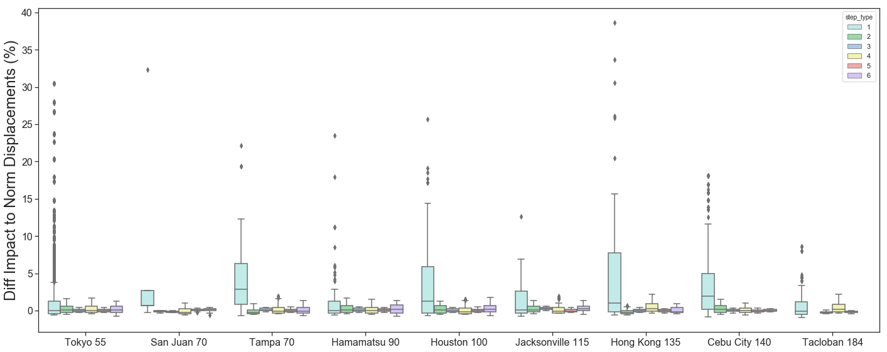

Previous Tasks
Updates for current publication. Status (Private Repo)
-
Loren - Filter out tweets that traverse distances greater than humanly possible.
Occurs when two users are logged into the same Twitter account at different locations.
-
Loren - Update initial displacement step low-end from 1 meters to 7.8 meters.
(Check if other papers have alternatively used 8 meters from winter storm paper.)
Also output for 56 meters, the distance used in Yan's study for local movement.
-
Loren - Generate Radius of Gyration for minimum of 3 and 5 steps.
Initial study required 5 tweets within 72 hour period (3 days).
Generate bars in radius charts for 1 day and 3 days.
-
Loren - Use kilometers for perturbation chart y-axis instead of lat/lon degrees to add clarity.
-
Loren - Compare cities using a proportional mix of displacement steps adding up to 100%.
Compare a proportional mix before and after storms to allow for power outages.
- Loren - Include stationary (0 to 7.8 meters) in the proportional mix of step distances.
-
Ryan - Set up Python for PowerLaw graphs.
-
Ryan - Clarify how perturbation distance is effected by differing city sizes. Larger urban areas allow for greater fluctuations in displacement distance during storms. Greater fluctuations could cause larger percentage changes in displacement.
-
Loren and Chel - Filter out tweets by bots using API service.
During storm impact, the perturbation of the following three travel steps was found to increase:
Travel Step 1 (teal) — 1 to 100 meters: Typical of movement within a home or office
Travel Step 4 (yellow) — 1 to 5 km: Local travel (like to a grocery store), but less than a work commute.
Travel Step 6 (purple) — 10 km or more: Travel between cities (Unless resiliency breaks, as with Tacloban @ 184 mph)
Percentage Change in Travel Distance (6 Steps)
Change in displacement distance (in absolute lat/lon degrees).
Uses 6 discrete travel segments to compare 5-day norm and 1 day impact.

Travel steps: (1) 1-100m, (2) 100-500m, (3) 500m-1km, (4) 1-5km, (5) 5-10km, and (6) over 10km
In order to include Tacloban, the chart above includes displacement steps that originated after 5pm the prior day.